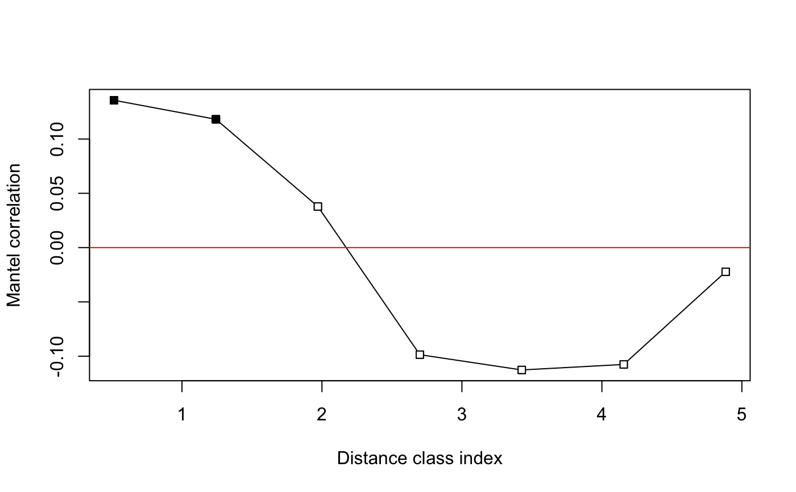
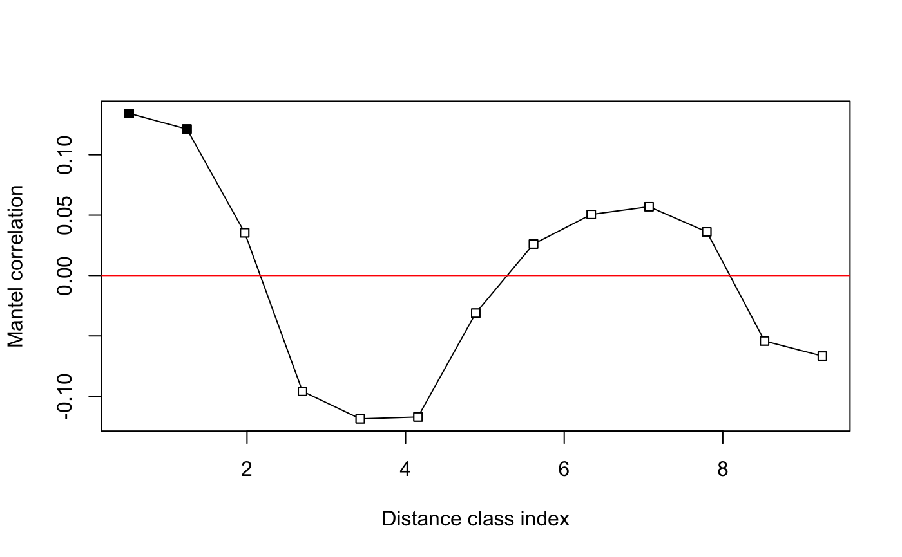

Mantel Correlogram
mantel.correlog.RdFunction mantel.correlog computes a multivariate
Mantel correlogram. Proposed by Sokal (1986) and Oden and Sokal
(1986), the method is also described in Legendre and Legendre (2012,
pp. 819–821) and tested and compared in Borcard and Legendere (2012).
Usage
mantel.correlog(D.eco, D.geo=NULL, XY=NULL, n.class=0, break.pts=NULL,
cutoff=TRUE, r.type="pearson", nperm=999, mult="holm", progressive=TRUE)
# S3 method for class 'mantel.correlog'
plot(x, alpha=0.05, ...)Arguments
- D.eco
An ecological distance matrix, with class either
distormatrix.- D.geo
A geographic distance matrix, with class either
distormatrix. Provide eitherD.geoorXY. Default:D.geo=NULL.- XY
A file of Cartesian geographic coordinates of the points. Default:
XY=NULL.- n.class
Number of classes. If
n.class=0, the Sturges equation will be used unless break points are provided.- break.pts
Vector containing the break points of the distance distribution. Provide (n.class+1) breakpoints, that is, a list with a beginning and an ending point. Default:
break.pts=NULL.- cutoff
For the second half of the distance classes,
cutoff = TRUElimits the correlogram to the distance classes that include all points. Ifcutoff = FALSE, the correlogram includes all distance classes.- r.type
Type of correlation in calculation of the Mantel statistic. Default:
r.type="pearson". Other choices arer.type="spearman"andr.type="kendall", as in functionscorandmantel.- nperm
Number of permutations for the tests of significance. Default:
nperm=999. For large data files, permutation tests are rather slow.- mult
Correct P-values for multiple testing. The correction methods are
"holm"(default),"hochberg","sidak", and other methods available in thep.adjustfunction:"bonferroni"(best known, but not recommended because it is overly conservative),"hommel","BH","BY","fdr", and"none".- progressive
Default:
progressive=TRUEfor progressive correction of multiple-testing, as described in Legendre and Legendre (1998, p. 721). Test of the first distance class: no correction; second distance class: correct for 2 simultaneous tests; distance class k: correct for k simultaneous tests.progressive=FALSE: correct all tests forn.classsimultaneous tests.- x
Output of
mantel.correlog.- alpha
Significance level for the points drawn with black symbols in the correlogram. Default:
alpha=0.05.- ...
Other parameters passed from other functions.
Details
A correlogram is a graph in which spatial correlation values
are plotted, on the ordinate, as a function of the geographic distance
classes among the study sites along the abscissa. In a Mantel
correlogram, a Mantel correlation (Mantel 1967) is computed between a
multivariate (e.g. multi-species) distance matrix of the user's choice
and a design matrix representing each of the geographic distance
classes in turn. The Mantel statistic is tested through a
permutational Mantel test performed by vegan's
mantel function.
Borcard and Legendre (2012) show that the testing method in the
Mantel correlogram has correct type I error and power, contrary to
the simple and partial Mantel tests so often used by ecologists and
geneticists in spatial analysis (see mantel.partial).
They also show that the test in Mantel correlograms is the same test
as used by Wagner (2004) in multiscale ordination
(mso), and that it is closely related to the Geary’s
\(c\) test in univariate correlograms.
When a correction for multiple testing is applied, more permutations are necessary than in the no-correction case, to obtain significant \(p\)-values in the higher correlogram classes.
The print.mantel.correlog function prints out the
correlogram. See examples.
Value
- mantel.res
A table with the distance classes as rows and the class indices, number of distances per class, Mantel statistics (computed using Pearson's r, Spearman's r, or Kendall's tau), and p-values as columns. A positive Mantel statistic indicates positive spatial correlation. An additional column with p-values corrected for multiple testing is added unless
mult="none".- n.class
The n umber of distance classes.
- break.pts
The break points provided by the user or computed by the program.
- mult
The name of the correction for multiple testing. No correction:
mult="none".- progressive
A logical (
TRUE,FALSE) value indicating whether or not a progressive correction for multiple testing was requested.- n.tests
The number of distance classes for which Mantel tests have been computed and tested for significance.
- call
The function call.
References
Borcard, D. & P. Legendre. 2012. Is the Mantel correlogram powerful enough to be useful in ecological analysis? A simulation study. Ecology 93: 1473-1481.
Legendre, P. and L. Legendre. 2012. Numerical ecology, 3rd English edition. Elsevier Science BV, Amsterdam.
Mantel, N. 1967. The detection of disease clustering and a generalized regression approach. Cancer Res. 27: 209-220.
Oden, N. L. and R. R. Sokal. 1986. Directional autocorrelation: an extension of spatial correlograms to two dimensions. Syst. Zool. 35: 608-617.
Sokal, R. R. 1986. Spatial data analysis and historical processes. 29-43 in: E. Diday et al. [eds.] Data analysis and informatics, IV. North-Holland, Amsterdam.
Sturges, H. A. 1926. The choice of a class interval. Journal of the American Statistical Association 21: 65–66.
Wagner, H.H. 2004. Direct multi-scale ordination with canonical correspondence analysis. Ecology 85: 342-351.
Examples
# Mite data available in "vegan"
data(mite)
data(mite.xy)
mite.hel <- decostand(mite, "hellinger")
# Detrend the species data by regression on the site coordinates
mite.hel.resid <- resid(lm(as.matrix(mite.hel) ~ ., data=mite.xy))
# Compute the detrended species distance matrix
mite.hel.D <- dist(mite.hel.resid)
# Compute Mantel correlogram with cutoff, Pearson statistic
mite.correlog <- mantel.correlog(mite.hel.D, XY=mite.xy, nperm=49)
summary(mite.correlog)
#> Length Class Mode
#> mantel.res 65 -none- numeric
#> n.class 1 -none- numeric
#> break.pts 14 -none- numeric
#> mult 1 -none- character
#> n.tests 1 -none- numeric
#> call 4 -none- call
mite.correlog
#>
#> Mantel Correlogram Analysis
#>
#> Call:
#>
#> mantel.correlog(D.eco = mite.hel.D, XY = mite.xy, nperm = 49)
#>
#> class.index n.dist Mantel.cor Pr(Mantel) Pr(corrected)
#> D.cl.1 0.514182 358.000000 0.135713 0.02 0.02 *
#> D.cl.2 1.242546 650.000000 0.118174 0.02 0.04 *
#> D.cl.3 1.970910 796.000000 0.037820 0.04 0.06 .
#> D.cl.4 2.699274 696.000000 -0.098605 0.02 0.08 .
#> D.cl.5 3.427638 500.000000 -0.112682 0.02 0.10 .
#> D.cl.6 4.156002 468.000000 -0.107603 0.02 0.12
#> D.cl.7 4.884366 364.000000 -0.022264 0.12 0.14
#> D.cl.8 5.612730 326.000000 NA NA NA
#> D.cl.9 6.341094 260.000000 NA NA NA
#> D.cl.10 7.069458 184.000000 NA NA NA
#> D.cl.11 7.797822 130.000000 NA NA NA
#> D.cl.12 8.526186 66.000000 NA NA NA
#> D.cl.13 9.254550 32.000000 NA NA NA
#> ---
#> Signif. codes: 0 ‘***’ 0.001 ‘**’ 0.01 ‘*’ 0.05 ‘.’ 0.1 ‘ ’ 1
# or: print(mite.correlog)
# or: print.mantel.correlog(mite.correlog)
plot(mite.correlog)

# Compute Mantel correlogram without cutoff, Spearman statistic
mite.correlog2 <- mantel.correlog(mite.hel.D, XY=mite.xy, cutoff=FALSE,
r.type="spearman", nperm=49)
summary(mite.correlog2)
#> Length Class Mode
#> mantel.res 65 -none- numeric
#> n.class 1 -none- numeric
#> break.pts 14 -none- numeric
#> mult 1 -none- character
#> n.tests 1 -none- numeric
#> call 6 -none- call
mite.correlog2
#>
#> Mantel Correlogram Analysis
#>
#> Call:
#>
#> mantel.correlog(D.eco = mite.hel.D, XY = mite.xy, cutoff = FALSE, r.type = "spearman", nperm = 49)
#>
#> class.index n.dist Mantel.cor Pr(Mantel) Pr(corrected)
#> D.cl.1 0.514182 358.000000 0.134229 0.02 0.02 *
#> D.cl.2 1.242546 650.000000 0.121270 0.02 0.04 *
#> D.cl.3 1.970910 796.000000 0.035413 0.02 0.06 .
#> D.cl.4 2.699274 696.000000 -0.095899 0.02 0.08 .
#> D.cl.5 3.427638 500.000000 -0.118692 0.02 0.10 .
#> D.cl.6 4.156002 468.000000 -0.117148 0.02 0.12
#> D.cl.7 4.884366 364.000000 -0.031123 0.08 0.14
#> D.cl.8 5.612730 326.000000 0.026064 0.14 0.16
#> D.cl.9 6.341094 260.000000 0.050573 0.08 0.24
#> D.cl.10 7.069458 184.000000 0.057017 0.04 0.20
#> D.cl.11 7.797822 130.000000 0.036195 0.10 0.32
#> D.cl.12 8.526186 66.000000 -0.054242 0.02 0.24
#> D.cl.13 9.254550 32.000000 -0.066677 0.04 0.26
#> ---
#> Signif. codes: 0 ‘***’ 0.001 ‘**’ 0.01 ‘*’ 0.05 ‘.’ 0.1 ‘ ’ 1
plot(mite.correlog2)

# NOTE: 'nperm' argument usually needs to be larger than 49.
# It was set to this low value for demonstration purposes.